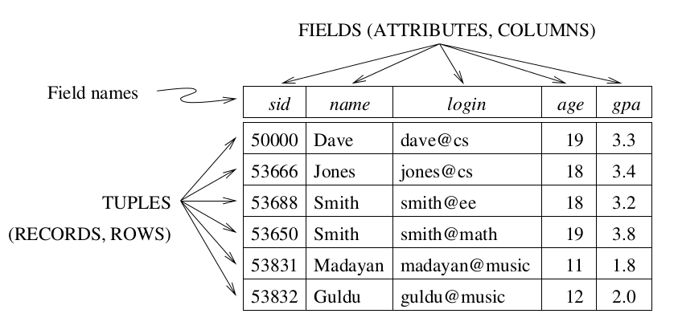
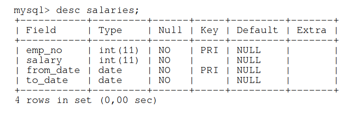

If you want print version => add '
?print-pdf' at the end of slides URL (remove '#' fragment) and then print.
Like: https://wwwcourses.github.io/...CourseIntro.html?print-pdf
Relational DBMS Overview. MySQL intro.
Created for

Relational DB Model Overview
Relational DB Model Overview
Definition
- A database is a collection of one or more tables, where each tables is a relation between rows and columns.
- A relation consists of a relation schema and a relation instance.
- Relation instance - a table with rows and columns.
- Relation schema - describes the column heads for the table.
Key Concepts
- Relational DataBase
- A collection of tables, with related data.
- Tables - represents a Relation.
- Table and relations are synonymous in DB context.
- A relation is different from relationship between tables.
- A table consists of rows and columns, like a simple spreadsheet.
- Each table is a set of unique rows.
- Row (Tuple, Record)
- Represents a collection of related values (characteristic) of an entity.
- Column (Field, Attribute )
- One column contains data of one and the same type, as defined in schema.
Key Concepts
{kind=link}
Tables Relationships
- One to one relationship
- Example: Customer -> Address
- One to Many/Many to One relationship
- Example: Customer -> Orders
- Many to Many relationship
- Examples: Orders -> Items
- Self Referencing relationship
- Customer -> Customer (like in referral program)
ExampleDatabase

Example Table
Popular Relationship Database Management System (RDBMS)
- Commercial:
- Oracle, Microsoft SQL Server, SAP SyBase
- Free (under GPL)
- MySQL/MariDB, PostgreSQL, SQLite
RDBMS - Basic Concepts
RDBMS - Basic Concepts
Data Definition Language (DDl)
- DDL helps you to define the database structure or schema
- Some common DDL Commands are
- CREATE, ALTER, DROP, TRUNCATE, etc.
- Changes are saved in the database immediately and permanently.
Data Manipulation Language (DML)
- The DML is the programming language used to express operations that interrogate or update the data in the database
- DML commands are used to manage the data stored in the database, like
- INSERT, UPDATE, DELETE, MERGE, CALL, etc.
SQL Introduction
SQL Introduction
What is SQL?
- SQLStructuredQueryLanguage
- The standard language for relational database management systems.
- Not a procedural language(C, Java etc.).
- A declarative language!
- Tell with SQL what you want instead of telling the system how to get it.
- Case insensitive!
SQL statements
- A set of commands you use to query or manipulate the DB.
- Some RDBMS require a semicolon at the end of each SQL statement.
Example SQL commands
SELECT, UPDATE, DELETE
INSERT INTO, CREATE DATABASE, ALTER DATABASE
CREATE TABLE, ALTER TABLE, DROP TABLE
CREATE INDEX, DROP INDEX
Setup MySQL
Setup MySQL
Install on Windows
Install on MacOS
Install on Linux
- Installing MySQL on Linux @https://dev.mysql.com/
- APT repos for all mysql-apt-config versions: https://repo.mysql.com/apt/ubuntu/pool/mysql-apt-config/m/mysql-apt-config/
- If you have problems on old linux version, you can try installing MariaDB
- https://downloads.mariadb.org/mariadb/repositories
- Check the instalation:
systemctl status mysql
# ● mariadb.service - MariaDB 10.2.38 database server
# Loaded: loaded (/lib/systemd/system/mariadb.service; enabled; vendor preset: enabled)
# Drop-In: /etc/systemd/system/mariadb.service.d
# └─migrated-from-my.cnf-settings.conf
MySQL Workbench
- MySQL Workbench is a unified visual tool for database architects, developers, and DBAs.
- Official site: www.mysql.com/products/workbench
- If after installation of mysql server you don't have MySQL Workbench, you can download it from:
- Download MySQL Workbench
mycli (optional)
mycli: A Terminal Client for MySQL with AutoCompletion and Syntax Highlighting.

Test the instalations
Test the instalations
MySQL Client
### the client:
mysql --version
# mysql Ver 14.14 Distrib 5.7.11, for Linux (x86_64) using EditLine wrapper
### the server:
mysqld --version
# mysqld Ver 5.7.11 for Linux on x86_64 (MySQL Community Server (GPL))
### the workbench
mysql-workbench --version
# Found /usr/lib/x86_64-linux-gnu/libproj.so.9
# MySQL Workbench CE (GPL) 6.3.10 CE build 12092614
Start/stop MySQL Server
Start/stop MySQL Server
Windows
- Open Run Window by Winkey + R
- Type services.msc
- Search MySQL service based on version installed.
- Click stop, start or restart the service option.
- Or you can start/stop MySQL from the command prompt:
- Reference: Starting MySQL as a Windows Service
C:\> "C:\Program Files\MySQL\MySQL Server 8.0\bin\mysqld"
C:\> "C:\Program Files\MySQL\MySQL Server 8.0\bin\mysqladmin" -u root shutdown
Linux
service mysql start
service mysql stop
service mysql restart
- Or if you have the old init.d
/etc/init.d/mysqld start
/etc/init.d/mysqld stop
/etc/init.d/mysqld restart
Connect to MySQL Server
Connect to MySQL Server
MySQL client
# connect to local mysql, using the root account:
mysql -u root -p
# Enter password:
# ...
# Welcome to the MariaDB monitor. Commands end with ; or \g.
# Your MariaDB connection id is 14
# Server version: 10.2.38-MariaDB-10.2.38+maria~xenial-log mariadb.org binary distribution
# Copyright (c) 2000, 2018, Oracle, MariaDB Corporation Ab and others.
# Type 'help;' or '\h' for help. Type '\c' to clear the current input statement.
# MariaDB [(none)]>
MySQL server - where my DB are stored?
- All MySQL databases are stored in directories inside a MySQL DATADIR directory.
- E.g. myExampleDB’s files would be stored inside ‘$DATADIR/myExampleDB’ directory.
- MySQl DATADIR is specified in the config file, but can be easilly retrieved by:
mariadb root@localhost:(none)> select @@datadir
+-----------------+
| @@datadir |
|-----------------|
| /var/lib/mysql/ |
+-----------------+
1 row in set
Time: 0.002s
Manage databases
Manage databases
Setup Test Databas
- Download the test db and load it
- Employees Sample Database
git clone https://github.com/datacharmer/test_db/
cd test.db
mysql -u root -p < employees.sql
# Enter password:
# INFO
# CREATING DATABASE STRUCTURE
# INFO
# ...
List/Create/Delete/ databases
### List all databases
## only those databases for which the user have some kind of privilege (or if the user have the global SHOW DATABASES privilege)
SHOW DATABASES
### Create a database
CREATE DATABASE employees;
### Delete a database
DROP DATABASE employees;
### Selecting a Database
## Before performing any table manipulations, you need to select the database on which they will be performed
USE employees;
Manage users
Create a New User
CREATE USER 'employees_db_admin'@'localhost' IDENTIFIED BY '1234';
If user exists, an error will be thrown.
Show Users
SELECT user,host FROM mysql.user;
Delete user
DROP USER 'employees_db_admin'@'localhost';
If user did not exists, an error will be thrown.
User privileges types
- ALL PRIVILEGES- this would allow a MySQL users all access to a designated database (or if no database is selected, across the system)
- CREATE- allows them to create new tables or databases
- DROP- allows them to them to delete tables or databases
- DELETE- allows them to delete rows from tables
- INSERT- allows them to insert rows into tables
- SELECT- allows them to use the Select command to read through databases
- UPDATE- allow them to update table rows
- GRANT OPTION- allows them to grant or remove other users' privileges
Grant privileges to a user
GRANT [type of permission]
ON [database name].[table name]
TO ‘[username]’@'host’;
GRANT ALL PRIVILEGES ON employees.* TO 'employees_db_admin'@'localhost';
Revoke privileges
REVOKE [type of permission] ON [database name].[table name] FROM ‘[username]’@‘localhost’;Reload all the privileges
Always be sure to reload all the privileges.
FLUSH PRIVILEGES;
Manage Tables
Create table
The minimal syntax
CREATE TABLE table_name(
column_name1 data_type,
column_name2 data_type,
....
);
Column names should not be MySQL reserved words. If you really want to use them (which is a bad practice), you have to put them in backticks(``)
Create table - example
CREATE TABLE artist (
artist_id SMALLINT(5) NOT NULL DEFAULT 0,
fname VARCHAR(20) DEFAULT NULL,
lname VARCHAR(20) NOT NULL,
PRIMARY KEY (artist_id)
);
Results in:
Query OK, 0 rows affected
Time: 0.280s
If table exists an error will be thrown!
Show CREATE TABLE
# '\G' modifier is used instead of ';' to display wide results in vertical form
show CREATE TABLE artist\G
Results in:
***************************[ 1. row ]***************************
Table | artist
Create Table | CREATE TABLE `artist` (
`artist_id` smallint(5) NOT NULL DEFAULT '0',
`fname` varchar(20) DEFAULT NULL,
`lname` varchar(20) NOT NULL,
PRIMARY KEY (`artist_id`)
) ENGINE=InnoDB DEFAULT CHARSET=latin1
This allows us to see the create statement that MySQL engine had used. It shows even the default options, which we did not state explicitly.
List All Tables
SHOW TABLES;
Results in:
+----------------------+
| Tables_in_music_db |
|----------------------|
| artist |
+----------------------+
Show Table Structure
DESC artist;
Results in:
+-----------+-------------+--------+-------+-----------+---------+
| Field | Type | Null | Key | Default | Extra |
|-----------+-------------+--------+-------+-----------+---------|
| artist_id | smallint(5) | NO | PRI | 0 | |
| fname | varchar(20) | YES | | <null> | |
| lname | varchar(20) | NO | | <null> | |
+-----------+-------------+--------+-------+-----------+---------+
Delete a Table
DROP TABLE artist;
If table do not exists, an error is thrown:
ERROR 1051 (42S02): Unknown table 'music_db.artist'
Alter tables
Add column
ALTER TABLE table_name
ADD new_column_name column_definition
[ FIRST | AFTER column_name ]; # optional
ALTER TABLE artist
ADD birth_date TINYINT
AFTER lname;
Remove column
ALTER TABLE artist DROP birth_date;
Export DB to external sql file:
mysqldump -u username -p databasename > filename.sql
Exercises
Create DB schema dumped in external file
- Create a simple DB: music_db, using the SQL statements provided in the file music_db_schema.sql.
- You can use the MySQL Workbench to execute the statements by:
'File' => 'Run SQL script...' and selecting the 'music_db.sql' file you have downloaded.
Create table as music_db_admin
- Reconnect to the music_db as music_db_admin user.
- Create new table producer with following scheme:
+---------------+-------------+------+-----+---------+
| Field | Type | Null | Key | Default |
+---------------+-------------+------+-----+---------+
| producer_id | smallint(5) | NO | PRI | 0 |
| artist_id | smallint(5) | NO | PRI | 0 |
| album_id | smallint(5) | NO | PRI | 0 |
| fname | varchar(20) | YES | | NULL |
| lname | varchar(20) | NO | | NULL |
| current_label | varchar(20) | YES | | NULL |
+---------------+-------------+------+-----+---------+
Executing SQL Statements stored in external file
While connecting with MySQL client
mysql -u user_name -p [db_name] < full_file_name
- [db_name] is optional (if not set, you'll have to state 'use db_name' later)
- text_file is an ASCII file, which contains SQL statements
In MySQL client
mysql> source full_file_name
Using MySQL Workbench
Go to
'File'=>'Run SQL script...'and browse to select the file, which contains the SQL statements you want to execute.You can do the same by
'File'=>'Open SQL script...'and execute the statements in Workbench editor.